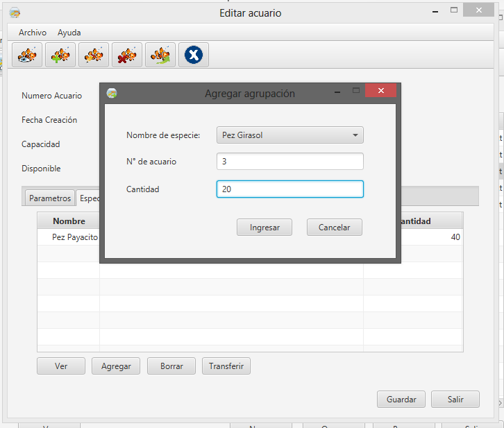
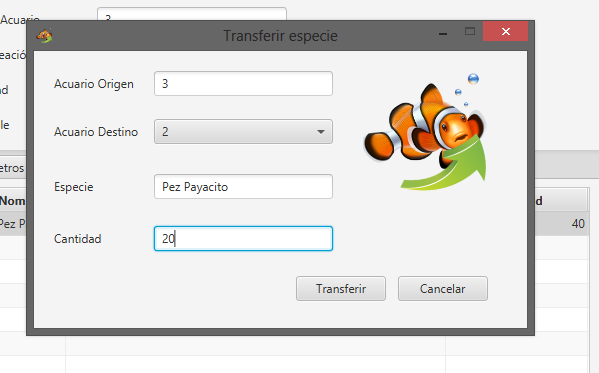
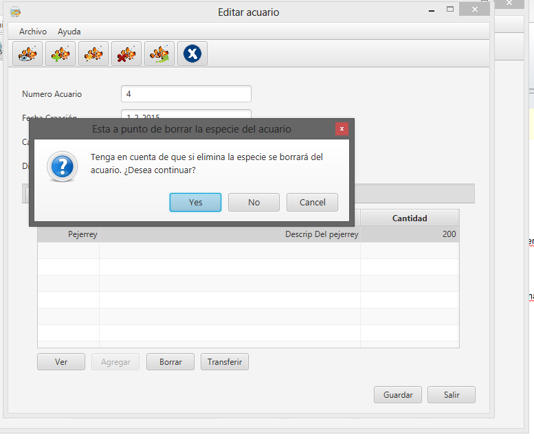

Una vez que tenga acuarios cargados en el sistema, podrá, para cada uno de ellos, agregar nuevos individuos, transferirlos entre acuarios o eliminar individuos.
Debido a que generalmente, un cardúmen cuenta con una cantidad bastante importante de individuos de una misma especie, el SGA maneja los individuos de una forma general, indicando en cada acuario y para cada especie, la cantidad general de individuos cargados. Esto brinda una óptica mucho más simplificada de las tareas a realizar, e introduce la noción de individuo como parte de un cardumen, como ocurre en cualquier población de peces.
Para agregar nuevos individuos en un acuario creado, deberá acceder a ver el acuario de la lista incorporada en la pantalla principal de la sección de ACUARIOS.
Una vez dentro de la información del acuario, deberá dirigirse a la sección ESPECIES:

Podrá incorporar individuos de las diferentes especies cargadas en el sistema (como se indica aquí), para indicar que es transferencia de otro acuario, deberá realizarlo en la lista que se despliega al seleccionar "Elegir especie":

La carga de individuos en un acuario se explica en ésta sección.
El borrado de individuos de un acuario, se realiza de una forma muy similar al borrado de especies o de usuarios del sistema, primero deberá acceder a la lista de las especies cargadas en el acuario:

Habiendo seleccionado una de las mismas, podrá indicar su borrado mediante el botón ELIMINAR, se le pedirá confirmación de borrado, una vez aceptado, los individuos de la especie se eliminarán del acuario de forma permanente.
Created with the Personal Edition of HelpNDoc: Full-featured Kindle eBooks generator